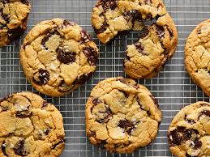

Chocolate Chip Cookies Recipe

Description
These chocolate chip cookies are crispy on the edges and chewy in the center, loaded with gooey chocolate chips for the perfect treat.
Ingredients
- Flour: 2 and 1/4 cups of all-purpose flour.
- Baking Soda: 1 teaspoon of baking soda.
- Salt: 1/2 teaspoon of salt.
- Butter: 1 cup of unsalted butter, softened.
- Sugar: 3/4 cup of granulated sugar.
- Brown Sugar: 3/4 cup of packed brown sugar.
- Vanilla Extract: 1 teaspoon of vanilla extract.
- Eggs: 2 large eggs.
- Chocolate Chips: 2 cups of semisweet chocolate chips.
Tip: For an extra touch, sprinkle a little sea salt on top of the cookies before baking.
Steps
- Preheat your oven to 350°F (175°C) and line a baking sheet with parchment paper.
- In a bowl, whisk together the flour, baking soda, and salt.
- In a separate large bowl, cream together the butter, granulated sugar, and brown sugar until light and fluffy.
- Beat in the vanilla extract and eggs one at a time, mixing well after each addition.
- Gradually add the dry ingredients to the wet ingredients and mix until just combined.
- Stir in the chocolate chips.
- Drop rounded tablespoons of dough onto the prepared baking sheet.
- Bake for 10-12 minutes, or until the edges are golden brown.
- Let cool on the baking sheet for a few minutes before transferring to a wire rack to cool completely.
Go back